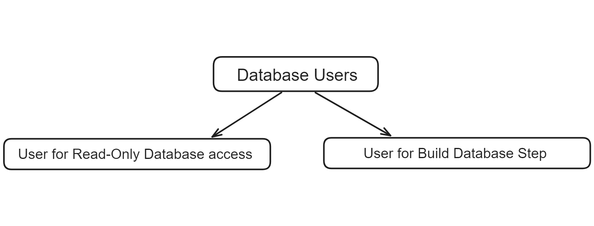

Steps for setting up software-discovery-tool application on server¶
The instructions provided below specify the steps for SLES 11 SP4/12/12 SP1/12 SP2 and Ubuntu 18.04/20.04/22.04. If you are using a different OS, install the listed dependencies using your OS’s package manager. For the most reliable setup, consider using a virtual machine (VM) to create a sandboxed environment. This can minimize compatibility issues and avoids the need to create additional users on your primary system.
NOTE:
make sure you are logged in as user with sudo permissions
Step 1: Install prerequisite¶
For SLES (11 SP4, 12):
sudo zypper install -y python python-setuptools gcc git libffi-devel python-devel openssl openssl-devel cronie python-xml pyxml tar wget aaa_base which w3m sudo easy_install pip sudo pip install 'cryptography==1.4' Flask launchpadlib simplejson logging
For Ubuntu (18.04, 20.04, 22.04):
sudo apt-get update sudo apt-get install -y python3 python3-pip gcc git python3-dev libssl-dev libffi-dev cron python3-lxml apache2 libapache2-mod-wsgi-py3 sudo pip3 install cffi cryptography Flask launchpadlib simplejson requests pytest python-dotenv
For SLES (12 SP1, 12 SP2, 12 SP3):
sudo zypper install -y python3 python3-pip python3-setuptools gcc git libffi-devel python3-devel openssl openssl-devel cronie python3-lxml tar wget aaa_base which w3m apache2 apache2-devel apache2-worker apache2-mod_wsgi-python3 sudo pip3 install cryptography launchpadlib simplejson Flask pytest
if “/usr/local/bin” is not part of $PATH add it to the path:
echo $PATH export PATH=/usr/local/bin:$PATH sudo sh -c "echo 'export PATH=/usr/local/bin:$PATH' > /etc/profile.d/alternate_install_path.sh"
Step 2: Checkout the source code, into /opt/ folder¶
cd /opt/
sudo git clone https://github.com/openmainframeproject/software-discovery-tool.git
cd software-discovery-tool
Copy the supported_distros.py.example file to supported_distros.py:¶
sudo cp src/config/supported_distros.py.example src/config/supported_distros.py
Note: In case software-discovery-tool code is already checked out, do the following for latest updates
cd /opt/software-discovery-tool
sudo git pull origin master
Step 3: Set Environment variables¶
sudo sh -c "echo 'export PYTHONPATH=/opt/software-discovery-tool/src/classes:/opt/software-discovery-tool/src/config:$PYTHONPATH' > /etc/profile.d/software-discovery-tool.sh"
Step 4: Install and configure software-discovery-tool¶
SLES (11 SP4, 12):
Copy the init.d script to start/stop/restart software-discovery-tool application
sudo chmod 755 -R /opt/software-discovery-tool/src/setup cd /opt/software-discovery-tool/src/setup sudo ./create_initid_script.sh
Enable software-discovery-tool service
sudo systemctl reload software-discovery-tool
Start the Flask server as below
sudo service software-discovery-tool start
SLES (12 SP1, 12 SP2, 12 SP3) and Ubuntu (18.04, 20.04, 22.04):
Copy the apache configuration file from
/opt/software-discovery-tool/src/config/sdt.confinto respective apache configuration folder as belowSLES (12 SP1, 12 SP2, 12 SP3):
sudo cp -f /opt/software-discovery-tool/src/config/sdt.conf /etc/apache2/conf.d/sdt.conf
For Ubuntu (18.04, 20.04, 22.04):
sudo cp -f /opt/software-discovery-tool/src/config/sdt.conf /etc/apache2/sites-available/sdt.conf sudo mv /etc/apache2/sites-available/000-default.conf /etc/apache2/sites-available/z-000-default.confCreate new user and group for apache
sudo useradd apache sudo groupadd apache
Enable authorization module in apache configuration(Only for SLES 12 SP1, 12 SP2, 12 SP3)
sudo a2enmod mod_access_compat
Set appropriate folder and file permission on /opt/software-discovery-tool/ folder for apache
sudo chown -R apache:apache /opt/software-discovery-tool/
Start/Restart Apache service
sudo apachectl restart
Step 5: Cloning Data Directory (Only First Time)¶
openmainframeproject/software-discovery-tool-data contains all OMP created json files. To add the data files, we will use git submodule
map the submodule directory with the directory path and update the directory:
sudo -u apache git submodule update --init --recursive --remote
Updating Data Directory¶
Everytime there’s an upstream change in the submodule:
To update the data directory with the main repo with the remote changes:
sudo -u apache git pull <upstream remote> <default branch> --recurse-submodules
To update ONLY the data directory keeping the main repo as it is:
sudo -u apache git submodule update --recursive --remote
Bringing in additional data: PDS¶
The data directory we cloned above only brings in sources maintained by this project. Notably it does not include SUSE Linux Enterprise Server, Red Hat Enterprise Linux, or Ubuntu. Instead, these sources are maintained by the Package Distro Search tool (abbreviated as PDS). In order to bring in those data sources, you will need to do that directly, as follows.
For example, taking RHEL_8_Package_List.json
Usage help will be displayed:
cd /opt/software-discovery-tool/bin
./package_build.py
Usage:
./package_build.py <exact_file_name.json>
[if data is from PDS]
./package_build.py debian
[if data is from Debian]
./package_build.py
[for displaying this help]
Example:
./package_build.py RHEL_8_Package_List.json
Example of extracting the RHEL_8_Package_List.json from PDS repo:
sudo -u apache ./bin/package_build.py RHEL_8_Package_List.json
Extracting RHEL_8_Package_List.json from PDS data ...
Thanks for using SDT!
NOTE:
Make sure the json file exists in the PDS data directory.
Please keep in mind that the directory belongs to user
apache, so in case of permission error, run the chown cmd or directly usepackage_build.pyasapacheuser like:sudo -u apache ./bin/package_build.py RHEL_8_Package_List.json
Update Supported Distros list¶
The src/config/supported_distros.py must now be updated to reflect the new json files that have been brought in order for them to be reflected in the UI. We started with a sample file back in Step 2, so that’s a good starting place. For more details about the formatting and expectations of this file, follow steps mentioned in Step 2 of Adding_new_distros
Step 6: Install and populate the SQL database¶
For Ubuntu (18.04, 20.04, 22.04):
Install dependencies and complete the secure installation. Remember the root password you set, you will need this in the future.¶
sudo apt install mariadb-server python3-pymysql
sudo mysql_secure_installation
Log in to MariaDB with the root account you set and create the read-only user (with a password, changed below) and database.¶
# Log in to MariaDB with the root account you set.
mariadb -u root -p
# Create the read-only user
MariaDB> CREATE USER 'sdtreaduser'@'localhost' IDENTIFIED BY 'SDTUSERPWD'; # Replace 'SDTUSERPWD' with the desired password.
# Grant permissions.
MariaDB> GRANT SELECT ON sdtDB.* TO 'sdtreaduser'@'localhost';
# Apply changes and exit.
MariaDB> flush privileges;
MariaDB> quit
NOTE:
For enhanced security, it’s recommended to grant the software-discovery-tool user (sdtreaduser) only read (SELECT) permissions on the required database. This adheres to the principle of least privilege and minimizes the impact if the user credentials are compromised.
When working with SDT, two separate users with distinct permission sets are used:

User for Read-only Database Access (Read-Only Permissions): This user is granted strictly read-only permissions over the entire project, including the database, for use when a user searches the database through the tool.
User for Build Database Step (All Privileges): This user is granted all privileges over the database for the
database_buildstep below, allowing them to create new tables and drop old ones. This user’s credentials should never be stored in a.envfile, and customers must remember the password or set up a local system to manage it securely.
Create a .env file in the root of the project with credentials set above (see .env.example)¶
See .env.example and create a .env file in /opt/software-discovery-tool/, replacing the value of DB_PASSWORD with your own.
Run the script to populate the database, when prompted by the script for a user and password, use the root account and password you set above.¶
cd /opt/software-discovery-tool/bin/
./database_build.py
Step 7: Verify that the software-discovery-tool server is up and running¶
For Ubuntu (18.04, 20.04, 22.04): We now run the following commands to properly enable the config files of the software-discovery-tool server and then restart the apache server.
sudo a2ensite z-000-default.conf systemctl reload apache2 sudo a2ensite sdt.conf systemctl reload apache2 sudo apachectl restart
We can check if the server is up and running by going to following URL :
http://server_ip_or_fully_qualified_domain_name:port_number/sdt
(Alternatively, you can check with unittesting)
cd software-discovery-tool/src/tests
If you run pytest as your logged user, it may give errors/warnings since you have given user apache ownership.
sudo -u apache pytest
NOTE:
For SLES (11 SP4, 12) by default the port_number will be 5000
For SLES (12 SP1, 12 SP2, 12 SP3) and Ubuntu (18.04, 20.04, 22.04) by default the port_number will be 80
Step 8: (Optional) Custom configuration¶
Following configuration settings can be managed in /opt/software-discovery-tool/src/config/config.py:
<software-discovery-tool_BASE> - Base location where software-discovery-tool is Installed/Cloned. Defaults to `/opt/software-discovery-tool/`
<DATA_FILE_LOCATION> - Location of folder containing all distribution specific JSON data
<LOG_FILE_LOCATION> - Location of folder containing software-discovery-tool logs
<enable_proxy_authentication> - Flag enabling/disabling proxy based network access
<proxy_user> - Proxy server user name
<proxy_password> - Proxy server password
<proxy_server> - Proxy server IP/fully qualified domain name
<proxy_port> - Proxy port number
<DEBUG_LEVEL> - Set Debug levels for the application to log
<server_host> - IP/fully qualified domain name of server where software-discovery-tool application will be deployed
<server_port> - software-discovery-tool port on which application will be accessible to end users
<SUPPORTED_DISTROS> - Mapping of all the supported distros, new distros added need to be mapped here.
<MAX_RECORDS_TO_SEND> = Max number of records returned to the client. Defaults to 100
<CACHE_SIZE> - Number of searches to be cached. Default to 10
NOTE:
In order to add new distribution support refer here
In case any of the parameters are updated, the server has to be restarted:
SLES (12 SP1, 12 SP2, 12 SP3) and Ubuntu (18.04, 20.04, 22.04):
Start/Restart Apache service
sudo apachectl restart
SLES (11 SP4, 12):
Start the Flask server as below
sudo service software-discovery-tool start